Ce ne sont pas des maquettes : c'est l'application réelle, servie par Flask, capturée dans un cadre de 390 × 844 — l'écran d'un téléphone de juge. La colonne de gauche est ce que voit tout le monde ; celle de droite ce que voit un téléphone réglé en sombre, et elle n'a pas bougé d'un octet depuis le 02/09.
Le sombre n'est plus imposé, il est demandé. Aucun réglage dans l'application : le système décide, comme sur la console depuis la spec 021.
L'étape 1 est active : carte blanche, liseré d'encre, la puce « 1 » pleine. L'étape 2 attend, en creux. Le bouton désactivé se lit comme un emplacement vide, pas comme une carte à remplir.
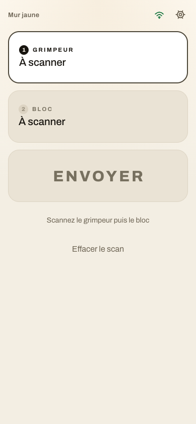
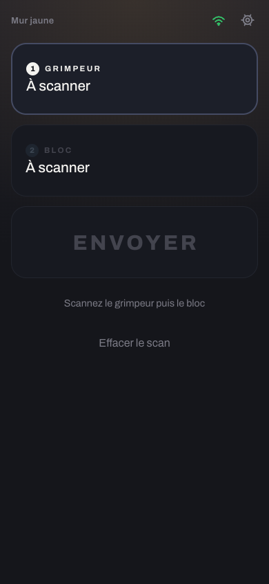
La carte 1 se remplit, la carte 2 devient l'étape active. La catégorie garde sa colonne de droite à la taille du nom (spec 033).
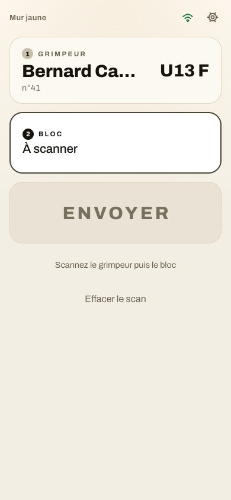
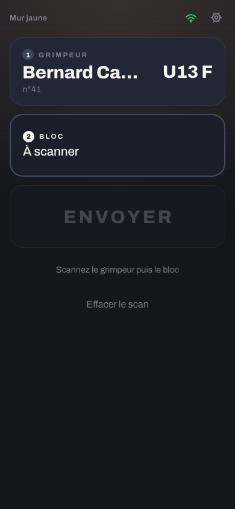
C'est la contrainte qui commande tout le reste : la teinte du circuit porte de l'information. L'aplat garde donc la couleur exacte du circuit — le même jaune que sur l'Android, au point près. Ce qui change en clair, c'est la teinte ÉCRITE (le libellé « BLOC », le détail « U13 · U15 — Jaune ») : un jaune pur sur du papier mesure 1,9:1, on ne le lit pas. Elle est tirée vers l'encre à moitié — 5,1:1 pour le jaune — et la hue reste reconnaissable.
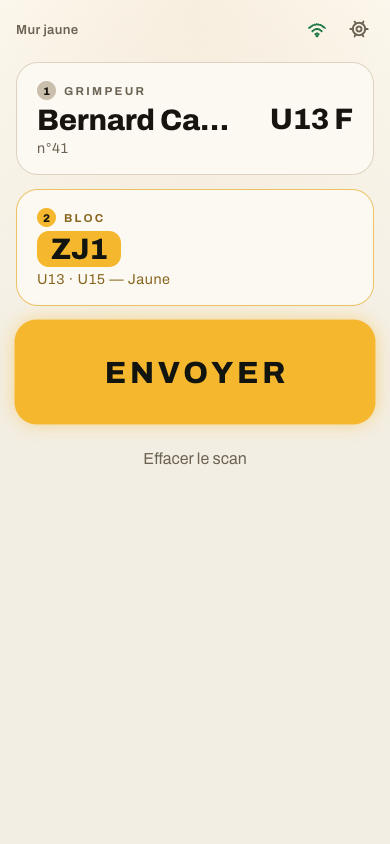
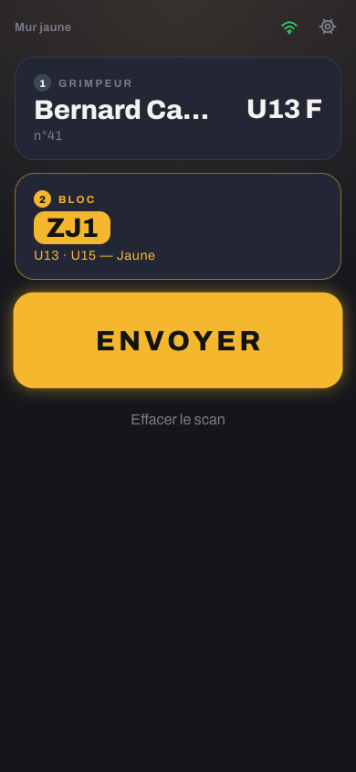
Il était rendu en craie, et ce n'était pas un choix de couleur : un aplat noir sur un fond presque noir ne se voit pas. Mais la craie était une rustine du fond sombre — sur du papier sable, elle ne se voit pas davantage. « Noir » prend donc l'encre du thème : presque noir sur le papier, craie sur l'ardoise. Dans les deux cas c'est la couleur la plus contrastée de l'écran, ce que « Noir » veut dire dans une salle. C'est la question laissée ouverte par la spec 035, et elle est tranchée ici.
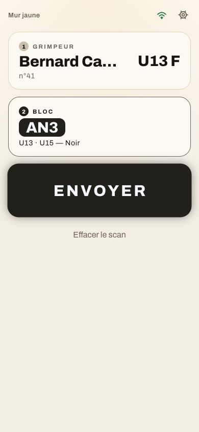
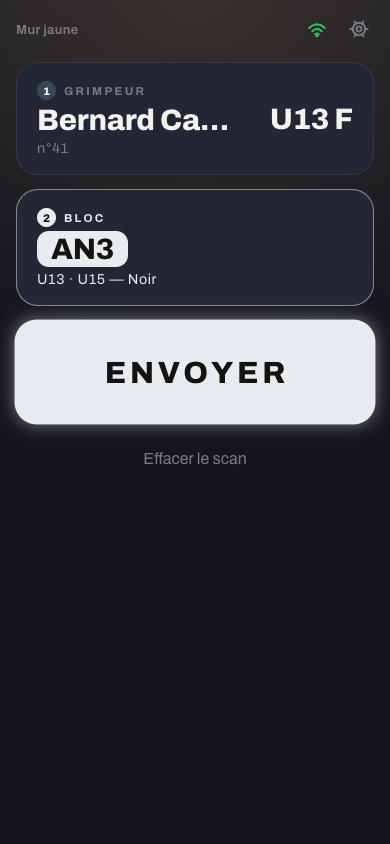
On n'empêche jamais l'envoi (spec 019) : le bandeau avertit, le bouton dit ce qu'il fait vraiment. L'aplat jaune du bouton est le même dans les deux thèmes — un jaune franc avec de l'encre sombre se lit sur du papier comme sur de l'ardoise. Le voile du bandeau, lui, est tiré du jaune vif et non de l'ocre du texte : un ocre sombre dilué dans du sable donne un khaki terne.
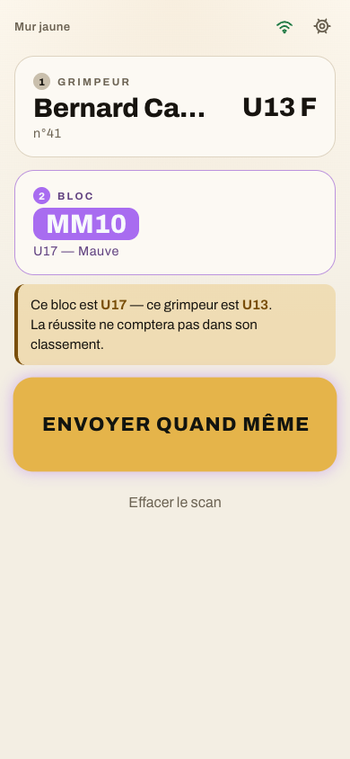
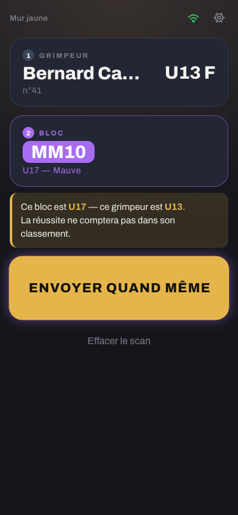
Les deux pastilles gardent leur code : l'ambre pour ce qui repartira tout seul, le rouge pour ce qui demande une action.
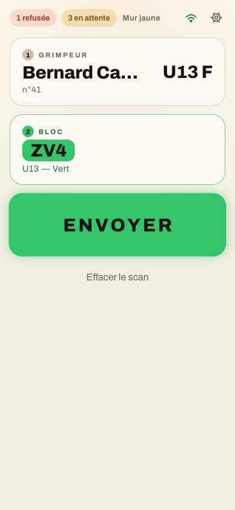
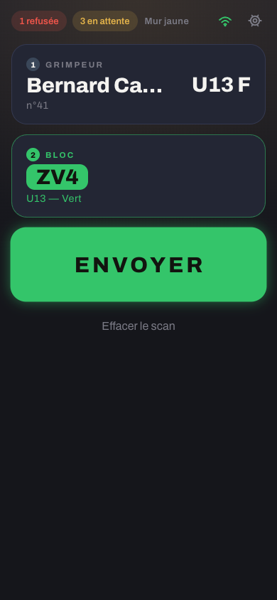
Les cases à cocher, les champs de saisie et les barres de
défilement sont natifs : sans color-scheme: light dark,
ils resteraient sombres sur le papier. Le bleu des actions s'assombrit en
clair — #3E8CF7 sur blanc mesure 3,1:1, sous le seuil du
texte.
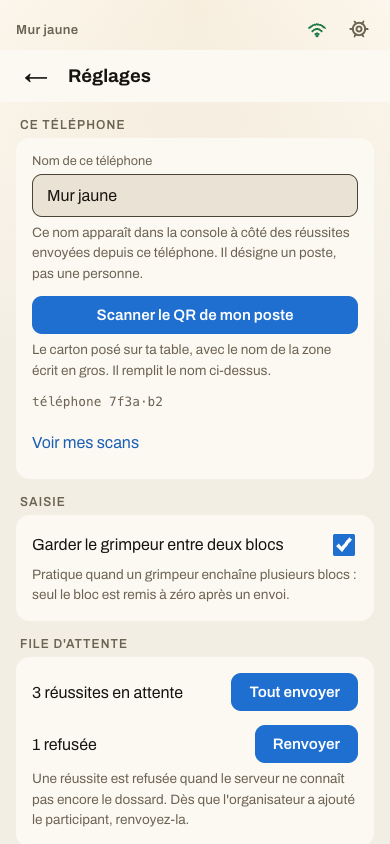
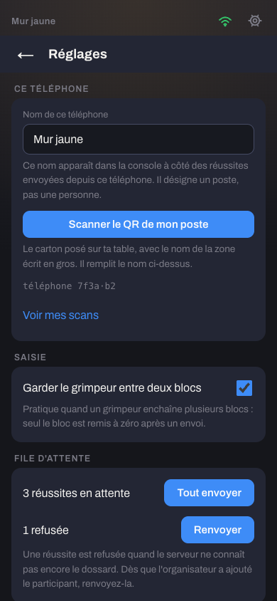
Le seul endroit qui ne suit pas le thème, et ce n'est pas du décor : c'est l'image de la caméra. Un cadre clair autour d'un flux vidéo éblouit dans la pénombre et fait fermer l'iris du capteur — le QR met alors plus longtemps à être reconnu. Même raison que le mur toujours clair de la page de résultats : la couleur suit l'usage, pas le thème.
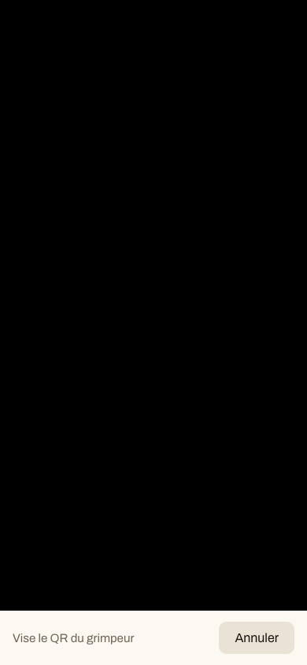
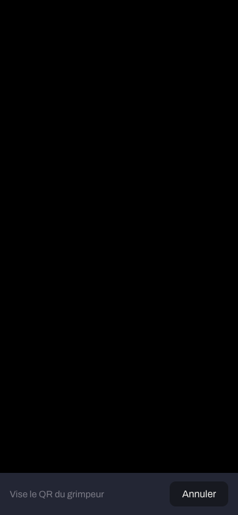
Le style ne connaît que des rôles, jamais une couleur : c'est ce qui permet aux deux jeux de coexister sans qu'une règle ait à savoir lequel est actif. Le papier sable vient de la direction « Plein Jour » des maquettes de la spec 035.
| Rôle | Clair (par défaut) | Sombre (au 02/09) | Ce qu'il porte |
|---|---|---|---|
| --fond | #F3EEE3 | #15161B | le papier, avec sa lueur ocre en haut d'écran |
| --carte-active | #FFFFFF | #1C1F29 | l'étape où on en est |
| --carte-faite | #FCF9F3 | #232634 | l'étape remplie, et les blocs des réglages |
| --carte-attente | #EAE3D5 | #171920 | l'étape pas encore atteignable, le bouton vide |
| --encre | #17140F | #F4F3F0 | 16,1:1 sur le fond |
| --encre2 | #6C6353 | #7B7B86 | les détails, le nom du poste — 5,5:1 |
| --action | #1F6FD0 | #3E8CF7 | les aplats bleus — 4,9:1 avec du blanc dessus |
| --attention | #7A4F0A | #E5B44A | le texte et le trait de l'avertissement — 5,3:1 sur son voile |
| --attention-fond | #E5B44A — le MÊME dans les deux thèmes | l'aplat de « Envoyer quand même » | |
| --fait / --alerte | #1F7A45 #A6301F | #34C56A #F0554A | le voyant de connexion, les refusées |
Ce qui n'est pas dans cette planche, et qui compte.
L'application installée a un écran de démarrage et une barre qui viennent du manifeste, lequel n'a pas de requête media : ils portent donc le thème par défaut, le clair. Un téléphone réglé en sombre verra un démarrage clair puis une application sombre. L'inverse — un démarrage noir sur les téléphones du plus grand nombre — serait le mauvais compromis.
La coquille du service worker passe en v6 : elle porte
le gabarit, donc tout le CSS. Sans changement de nom, un téléphone déjà
installé rouvrirait l'ancienne page sombre et personne ne verrait le
changement. Comme d'habitude, la nouvelle version est prise au
lancement suivant, pas en pleine compétition.
L'app juge Android reste sombre (darkColorScheme). Les
deux clients ne se ressembleront plus tant qu'elle n'a pas suivi ; c'est
assumé, et c'est une autre spec.